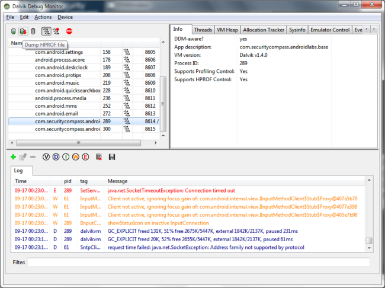
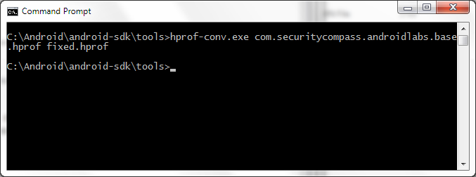
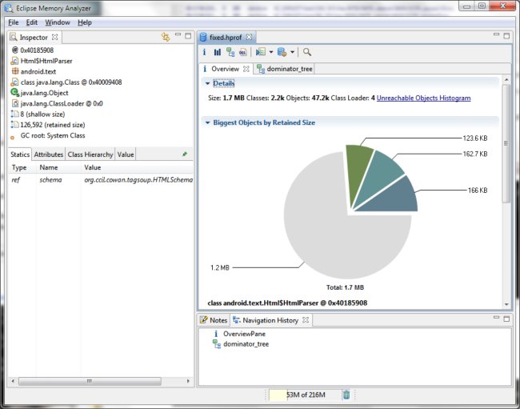

Lab 7 - Memory Protection
This particular lab will teach you how to inspect memory dumps as part of an Android app.
Sometimes you’ll find that an mobile application contains a lock, however it remains running in the background. You may want to see what information lies beyond that screen, but if you don’t know the lock you can’t get to it. You also don’t want to reset the device due to the information that may still be in memory, so we’ll learn to dump it.
In this lab, you’ll use DDMS as part of the Android SDK to obtain a memory dump of the application during runtime. This hopefully will yield some good information!
First, start up the emulator, and ensure that ExploitMe mobile is running.
Next, goto the home screen, and return to the app to ensure that it has been locked. This is the state that we’ll assume we find the application where we don’t know the password.
In the Android SDK in the tools folder, you’ll find DDMS so run it.

Click on the com.securitycompass.android.base (or whichever version you’re using) and hit the “dump hprof” file.
We’ll have to load the memory dump into a tool to read it, this tool is part of Eclipse and is called the memory analyzer tool (MAT).
Android HPROF dumps are not in proper JAVA format due to the Dalvik VM, so we’ll have to convert it. Thankfully Google’s included the hprof-conv tool in the SDK
Run:
hprof-conv source dest 
Once your file has been converted to Java format, load it up in the MAT.
Load the file

Click the “demoninator tree” button Click the “group by” button

Click on the com.securitycompass bundle and inspect the packages. Right click on the bundle and choose “outgoing references”

On the left you’ll see variables in memory at the current time including the session key! you can now takeover the session of the user!